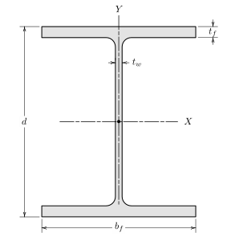

Section D.4 Wide Flange Sections
Subsection D.4.1 Wide Flange Section-US

| Description \({d} \times \, {W}\) |
\(W\) \(\text{lb/ft}\) |
\(A\) \(\text{in}^2\) |
\(d\) \(\text{in}\) |
\(b_f\) \(\text{in}\) |
\(t_w\) \(\text{in}\) |
\(t_f\) \(\text{in}\) |
\(\bar{I}_{xx}\) \(\text{in}^4\) |
\(\bar{I}_{yy}\) \(\text{in}^4\) |
| W44\(\times\)335 | 335 | 98.5 | 44 | 15.9 | 1.03 | 1.77 | 31100 | 1200 |
| W44\(\times\)290 | 290 | 85.4 | 43.6 | 15.8 | 0.865 | 1.58 | 27000 | 1040 |
| W44\(\times\)262 | 262 | 77.2 | 43.3 | 15.8 | 0.785 | 1.42 | 24100 | 923 |
| W44\(\times\)230 | 230 | 67.8 | 42.9 | 15.8 | 0.71 | 1.22 | 20800 | 796 |
| W40\(\times\)655 | 655 | 193 | 43.6 | 16.9 | 1.97 | 3.54 | 56500 | 2870 |
| W40\(\times\)593 | 593 | 174 | 43 | 16.7 | 1.79 | 3.23 | 50400 | 2520 |
| W40\(\times\)503 | 503 | 148 | 42.1 | 16.4 | 1.54 | 2.76 | 41600 | 2040 |
| W40\(\times\)431 | 431 | 127 | 41.3 | 16.2 | 1.34 | 2.36 | 34800 | 1690 |
| W40\(\times\)397 | 397 | 117 | 41 | 16.1 | 1.22 | 2.2 | 32000 | 1540 |
| W40\(\times\)372 | 372 | 110 | 40.6 | 16.1 | 1.16 | 2.05 | 29600 | 1420 |
| W40\(\times\)362 | 362 | 106 | 40.6 | 16 | 1.12 | 2.01 | 28900 | 1380 |
| W40\(\times\)324 | 324 | 95.3 | 40.2 | 15.9 | 1 | 1.81 | 25600 | 1220 |
| W40\(\times\)297 | 297 | 87.3 | 39.8 | 15.8 | 0.93 | 1.65 | 23200 | 1090 |
| W40\(\times\)277 | 277 | 81.5 | 39.7 | 15.8 | 0.83 | 1.58 | 21900 | 1040 |
| W40\(\times\)249 | 249 | 73.5 | 39.4 | 15.8 | 0.75 | 1.42 | 19600 | 926 |
| W40\(\times\)215 | 215 | 63.5 | 39 | 15.8 | 0.65 | 1.22 | 16700 | 803 |
| W40\(\times\)199 | 199 | 58.8 | 38.7 | 15.8 | 0.65 | 1.07 | 14900 | 695 |
| W40\(\times\)392 | 392 | 116 | 41.6 | 12.4 | 1.42 | 2.52 | 29900 | 803 |
| W40\(\times\)331 | 331 | 97.7 | 40.8 | 12.2 | 1.22 | 2.13 | 24700 | 644 |
| W40\(\times\)327 | 327 | 95.9 | 40.8 | 12.1 | 1.18 | 2.13 | 24500 | 640 |
| W40\(\times\)294 | 294 | 86.2 | 40.4 | 12 | 1.06 | 1.93 | 21900 | 562 |
| W40\(\times\)278 | 278 | 82.3 | 40.2 | 12 | 1.03 | 1.81 | 20500 | 521 |
| W40\(\times\)264 | 264 | 77.4 | 40 | 11.9 | 0.96 | 1.73 | 19400 | 493 |
| W40\(\times\)235 | 235 | 69.1 | 39.7 | 11.9 | 0.83 | 1.58 | 17400 | 444 |
| W40\(\times\)211 | 211 | 62.1 | 39.4 | 11.8 | 0.75 | 1.42 | 15500 | 390 |
| W40\(\times\)183 | 183 | 53.3 | 39 | 11.8 | 0.65 | 1.2 | 13200 | 331 |
| W40\(\times\)167 | 167 | 49.3 | 38.6 | 11.8 | 0.65 | 1.03 | 11600 | 283 |
| W40\(\times\)149 | 149 | 43.8 | 38.2 | 11.8 | 0.63 | 0.83 | 9800 | 229 |
| W36\(\times\)925 | 925 | 272 | 43.1 | 18.6 | 3.02 | 4.53 | 73000 | 4940 |
| W36\(\times\)853 | 853 | 251 | 43.1 | 18.2 | 2.52 | 4.53 | 70000 | 4600 |
| W36\(\times\)802 | 802 | 236 | 42.6 | 18 | 2.38 | 4.29 | 64800 | 4210 |
| W36\(\times\)723 | 723 | 213 | 41.8 | 17.8 | 2.17 | 3.9 | 57300 | 3700 |
| W36\(\times\)652 | 652 | 192 | 41.1 | 17.6 | 1.97 | 3.54 | 50600 | 3230 |
| W36\(\times\)529 | 529 | 156 | 39.8 | 17.2 | 1.61 | 2.91 | 39600 | 2490 |
| W36\(\times\)487 | 487 | 143 | 39.3 | 17.1 | 1.5 | 2.68 | 36000 | 2250 |
| W36\(\times\)441 | 441 | 130 | 38.9 | 17 | 1.36 | 2.44 | 32100 | 1990 |
| W36\(\times\)395 | 395 | 116 | 38.4 | 16.8 | 1.22 | 2.2 | 28500 | 1750 |
| W36\(\times\)361 | 361 | 106 | 38 | 16.7 | 1.12 | 2.01 | 25700 | 1570 |
| W36\(\times\)330 | 330 | 96.9 | 37.7 | 16.6 | 1.02 | 1.85 | 23300 | 1420 |
| W36\(\times\)302 | 302 | 89 | 37.3 | 16.7 | 0.945 | 1.68 | 21100 | 1300 |
| W36\(\times\)282 | 282 | 82.9 | 37.1 | 16.6 | 0.885 | 1.57 | 19600 | 1200 |
| W36\(\times\)262 | 262 | 77.2 | 36.9 | 16.6 | 0.84 | 1.44 | 17900 | 1090 |
| W36\(\times\)247 | 247 | 72.5 | 36.7 | 16.5 | 0.8 | 1.35 | 16700 | 1010 |
| W36\(\times\)231 | 231 | 68.2 | 36.5 | 16.5 | 0.76 | 1.26 | 15600 | 940 |
| W36\(\times\)256 | 256 | 75.3 | 37.4 | 12.2 | 0.96 | 1.73 | 16800 | 528 |
| W36\(\times\)232 | 232 | 68 | 37.1 | 12.1 | 0.87 | 1.57 | 15000 | 468 |
| W36\(\times\)210 | 210 | 61.9 | 36.7 | 12.2 | 0.83 | 1.36 | 13200 | 411 |
Subsection D.4.2 Wide Flange Section-SI
| Description \({d} \times \, {W}\) |
\(W\) \(\text{kg/m}\) |
\(A\) \(\text{mm}^2\) |
\(d\) \(\text{mm}\) |
\(b_f\) \(\text{mm}\) |
\(t_w\) \(\text{mm}\) |
\(t_f\) \(\text{mm}\) |
\(\bar{I}_{xx}\) \(10^6\text{ mm}^4\) |
\(\bar{I}_{yy}\) \(10^6\text{ mm}^4\) |
| W1100\(\times\)499 | 499 | 63500 | 1120 | 404 | 26.2 | 45 | 12900 | 499 |
| W1100\(\times\)433 | 433 | 55100 | 1110 | 401 | 22 | 40.1 | 11200 | 433 |
| W1100\(\times\)390 | 390 | 49800 | 1100 | 401 | 19.9 | 36.1 | 10000 | 384 |
| W1100\(\times\)343 | 343 | 43700 | 1090 | 401 | 18 | 31 | 8660 | 331 |
| W1000\(\times\)976 | 975 | 125000 | 1110 | 429 | 50 | 89.9 | 23500 | 1190 |
| W1000\(\times\)883 | 883 | 112000 | 1090 | 424 | 45.5 | 82 | 21000 | 1050 |
| W1000\(\times\)748 | 748 | 95500 | 1070 | 417 | 39.1 | 70.1 | 17300 | 849 |
| W1000\(\times\)642 | 642 | 81900 | 1050 | 411 | 34 | 59.9 | 14500 | 703 |
| W1000\(\times\)591 | 591 | 75500 | 1040 | 409 | 31 | 55.9 | 13300 | 641 |
| W1000\(\times\)554 | 554 | 71000 | 1030 | 409 | 29.5 | 52.1 | 12300 | 591 |
| W1000\(\times\)539 | 539 | 68400 | 1030 | 406 | 28.4 | 51.1 | 12000 | 574 |
| W1000\(\times\)483 | 483 | 61500 | 1020 | 404 | 25.4 | 46 | 10700 | 508 |
| W1000\(\times\)443 | 443 | 56300 | 1010 | 401 | 23.6 | 41.9 | 9660 | 454 |
| W1000\(\times\)412 | 412 | 52600 | 1010 | 401 | 21.1 | 40.1 | 9120 | 433 |
| W1000\(\times\)371 | 371 | 47400 | 1000 | 401 | 19.1 | 36.1 | 8160 | 385 |
| W1000\(\times\)321 | 321 | 41000 | 991 | 401 | 16.5 | 31 | 6950 | 334 |
| W1000\(\times\)296 | 296 | 37900 | 983 | 401 | 16.5 | 27.2 | 6200 | 289 |
| W1000\(\times\)584 | 584 | 74800 | 1060 | 315 | 36.1 | 64 | 12400 | 334 |
| W1000\(\times\)494 | 494 | 63000 | 1040 | 310 | 31 | 54.1 | 10300 | 268 |
| W1000\(\times\)486 | 486 | 61900 | 1040 | 307 | 30 | 54.1 | 10200 | 266 |
| W1000\(\times\)438 | 438 | 55600 | 1030 | 305 | 26.9 | 49 | 9120 | 234 |
| W1000\(\times\)415 | 415 | 53100 | 1020 | 305 | 26.2 | 46 | 8530 | 217 |
| W1000\(\times\)393 | 393 | 49900 | 1020 | 302 | 24.4 | 43.9 | 8070 | 205 |
| W1000\(\times\)350 | 350 | 44600 | 1010 | 302 | 21.1 | 40.1 | 7240 | 185 |
| W1000\(\times\)314 | 314 | 40100 | 1000 | 300 | 19.1 | 36.1 | 6450 | 162 |
| W1000\(\times\)272 | 272 | 34400 | 991 | 300 | 16.5 | 30.5 | 5490 | 138 |
| W1000\(\times\)249 | 249 | 31800 | 980 | 300 | 16.5 | 26.2 | 4830 | 118 |
| W1000\(\times\)222 | 222 | 28300 | 970 | 300 | 16 | 21.1 | 4080 | 95.3 |
| W920\(\times\)1377 | 1380 | 175000 | 1090 | 472 | 76.7 | 115 | 30400 | 2060 |
| W920\(\times\)1269 | 1270 | 162000 | 1090 | 462 | 64 | 115 | 29100 | 1910 |
| W920\(\times\)1194 | 1190 | 152000 | 1080 | 457 | 60.5 | 109 | 27000 | 1750 |
| W920\(\times\)1077 | 1080 | 137000 | 1060 | 452 | 55.1 | 99.1 | 23800 | 1540 |
| W920\(\times\)970 | 970 | 124000 | 1040 | 447 | 50 | 89.9 | 21100 | 1340 |
| W920\(\times\)787 | 787 | 101000 | 1010 | 437 | 40.9 | 73.9 | 16500 | 1040 |
| W920\(\times\)725 | 725 | 92300 | 998 | 434 | 38.1 | 68.1 | 15000 | 937 |
| W920\(\times\)656 | 656 | 83900 | 988 | 432 | 34.5 | 62 | 13400 | 828 |
| W920\(\times\)588 | 588 | 74800 | 975 | 427 | 31 | 55.9 | 11900 | 728 |
| W920\(\times\)537 | 537 | 68400 | 965 | 424 | 28.4 | 51.1 | 10700 | 653 |
| W920\(\times\)491 | 491 | 62500 | 958 | 422 | 25.9 | 47 | 9700 | 591 |
| W920\(\times\)449 | 449 | 57400 | 947 | 424 | 24 | 42.7 | 8780 | 541 |
| W920\(\times\)420 | 420 | 53500 | 942 | 422 | 22.5 | 39.9 | 8160 | 499 |
| W920\(\times\)390 | 390 | 49800 | 937 | 422 | 21.3 | 36.6 | 7450 | 454 |
| W920\(\times\)368 | 368 | 46800 | 932 | 419 | 20.3 | 34.3 | 6950 | 420 |
| W920\(\times\)344 | 344 | 44000 | 927 | 419 | 19.3 | 32 | 6490 | 391 |
| W920\(\times\)381 | 381 | 48600 | 951 | 310 | 24.4 | 43.9 | 6990 | 220 |
| W920\(\times\)345 | 345 | 43900 | 943 | 307 | 22.1 | 39.9 | 6240 | 195 |
| W920\(\times\)313 | 313 | 39900 | 932 | 310 | 21.1 | 34.5 | 5490 | 171 |
| W920\(\times\)289 | 289 | 36800 | 927 | 307 | 19.4 | 32 | 5040 | 156 |
| W920\(\times\)271 | 271 | 34600 | 922 | 307 | 18.4 | 30 | 4700 | 144 |